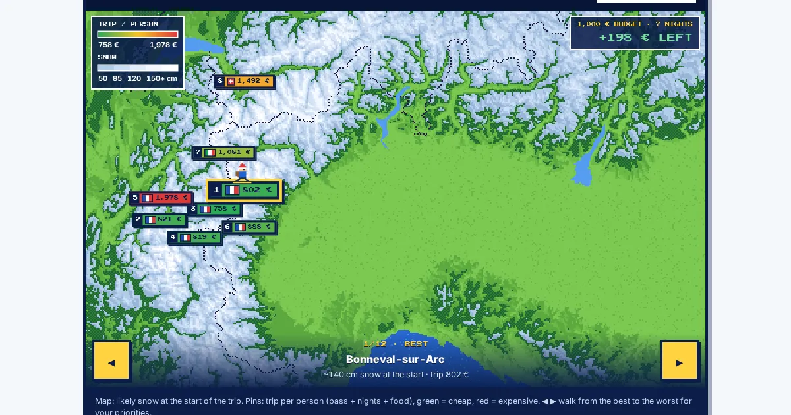
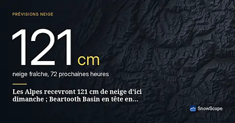

Comment utiliser le planificateur de séjour ski SnowScope
Le planificateur de séjour ski SnowScope répond à une question : où mon argent et mes dates m'offrent-ils le meilleur ski ? Vous choisissez une région, vos dates, un budget par personne et ce qui compte pour vous. Chaque station de la région reçoit alors une hauteur de neige probable pour votre premier jour, un total de séjour par personne et les chalets et hôtels autour, prêts à réserver. Ce guide passe en revue le mode normal, le tableau, le mode jeu et le sens de chaque chiffre.
Consultez les prévisions neige en temps réel pour Régions de neige sur l'application SnowScopeHauteurs de neige, alertes poudreuse et carte 3D, gratuitement.Étape 1 : région, dates, budget, qui part, priorités
Ouvrez le planificateur avec le bouton « Plan ski trip » en haut de chaque page SnowScope. Le mode normal s'ouvre par défaut. Le premier bloc contient les commandes : les puces de région (les Alpes, les Pyrénées, la Scandinavie, l'Ouest des États-Unis, l'Est des États-Unis, l'Ouest canadien et l'Atlas, 7 régions en tout), la première et la dernière nuit du séjour, votre budget par personne en euros, et qui part (seul dans votre chambre, un couple qui partage, ou une famille de 4 qui partage).
Sous les dates se trouvent les puces de priorité : l'argent d'abord, les meilleures pistes, beaucoup de neige, repas pas chers, hôtel pas cher, forfait pas cher. Choisissez-en une ou plusieurs. Sans sélection, les stations sont classées par neige par euro de forfait journée ; avec des puces, chacune compte autant et le classement suit votre mélange. Chaque changement relance le plan aussitôt, sur la carte, dans les fiches et dans le tableau.

Étape 2 : lire la carte
La carte a le même style que la carte d'accueil de SnowScope. Chaque station est une épingle colorée selon le prix du séjour par personne, vert pour la moins chère et rouge pour la plus chère de la région. L'étiquette montre la neige probable le premier jour et le total du séjour. Les 3 meilleures stations pour vos priorités portent une étoile et restent au-dessus là où les épingles se serrent. Touchez une épingle pour aller à sa fiche.
La légende sous la carte donne l'échelle des prix de la région pour vos dates : on voit d'un coup d'œil si l'écart entre la semaine la moins chère et la plus chère est petit ou grand.

Étape 3 : les fiches classées et le tableau
Sous la carte, les stations arrivent en fiches, dans l'ordre du classement. Chaque fiche montre le bloc neige (valeur probable, fourchette probable, neige maintenant et hauteur normale à cette date), trois jauges pour le forfait, les hôtels autour et les pistes, les avantages et inconvénients, un tableau de prix et la barre du séjour : forfait, nuits et repas côte à côte face à votre budget, avec l'argent qui reste ou qui manque. Les chalets et hôtels autour de la station sont listés avec la distance aux remontées et un lien RÉSERVER pour vos dates ; CARTE DES PRIX ouvre une carte des prix en direct à la demande.
Vous préférez des chiffres en lignes ? Passez en TABLEAU. Chaque colonne se trie d'un geste : forfait journée, nuit, repas par jour, total du séjour, argent restant, neige maintenant, neige au départ, pistes. Touchez une ligne pour ouvrir sa fiche complète sous le tableau.

Ce que veulent dire les chiffres
La neige maintenant est la hauteur du jour sur le haut du domaine, la même valeur que la carte en direct. La neige au départ est une projection : une valeur probable avec une fourchette probable. Elle combine le manteau d'aujourd'hui, un ensemble de prévisions aussi loin qu'il porte, et l'évolution de la neige jusqu'à votre date dans les hivers passés au même endroit et à la même altitude. La fourchette est le milieu, soit 60 % de ces issues. Plus vos dates sont lointaines, plus la fourchette est large ; le planificateur accepte des dates jusqu'à 6 mois à l'avance et se rafraîchit chaque jour.
Le forfait utilise le tarif multi-jours à l'avance quand la station en publie un, multiplié par vos jours de ski (7 nuits donnent 6 jours de ski, un jour pour le trajet), sinon des forfaits journée. Hôtel et repas sont des estimations par personne : une chambre ou un appartement partagé par votre groupe près des remontées, petit-déjeuner, un déjeuner sur les pistes et un dîner simple. Ils servent à comparer les stations, pas à remplacer un devis. Le total du séjour est forfait plus nuits plus repas par personne, comparé à votre budget ; avec Pro, le trajet s'ajoute aussi.
Mode jeu : le Ski Grand Prix
Touchez « Jouer en mode jeu » et le même planificateur devient un seul écran : la carte pixel des Alpes avec chaque station en épingle, les mêmes puces, dates et budget, et un bouton START. Les stations font alors la course à travers votre séjour nuit après nuit ; une station qui épuise votre budget sort le jour où elle est à sec. L'écran de résultat donne le podium, l'ordre complet, votre meilleure affaire en fiche avec RÉSERVER, et un rappel pour recevoir les alertes poudreuse de la région. « Retour au mode normal » ramène à la carte et aux fiches avec les mêmes réglages.

Pro : le coût total du séjour avec le trajet
Quand les premiers résultats apparaissent, le planificateur demande si vous voulez le coût total du séjour. Tapez votre ville ou votre adresse : avec Pro, le moyen le moins cher vers chaque station, en voiture (carburant et péages), en train ou en avion, est estimé et ajouté à chaque total, si bien que le classement tient aussi compte de la distance depuis chez vous. Sans Pro, la fiche Pro s'ouvre ; vous pouvez aussi ajouter le point de départ plus tard depuis le bloc de commandes.

Conseils aux skieurs
- Réglez d'abord les vraies dates : la projection de neige et le tarif du forfait en dépendent.
- Entrez le budget par personne, pas pour tout le groupe ; le planificateur adapte l'hôtel à la taille du groupe.
- La liste des chalets est triée par distance aux remontées ; le tri par étoiles montre plutôt les mieux notés.
- Les alertes poudreuse de la région vous tiennent informé jusqu'au départ ; elles sont gratuites.
Autres cartes (sites externes)
Références et crédits
- Planificateur de séjour ski SnowScope snowscope.app/planner.html
À propos de ces chiffres
Chiffres de neige : historique SnowScope, 46 hivers passés (1980-81 à 2025-26) à trois altitudes de la station (une estimation pour une zone, pas les bulletins de la station). Remontées, pistes et accès : les sources ci-dessous, vérifiées à la date indiquée.
Citer ce bulletin
Pour la recherche, l'enseignement ou la presse : chiffres et graphiques réutilisables librement sous CC BY 4.0 avec cette citation.
SnowScope (2026), Comment utiliser le planificateur de séjour ski SnowScope, https://snowscope.app/blog/fr/2026/11/how-to-use-the-snowscope-ski-trip-planner.html, consulté le 2026-11-19
SnowScope (Atlas Labs). (2026, November 19). Comment utiliser le planificateur de séjour ski SnowScope. SnowScope snow reports. https://snowscope.app/blog/fr/2026/11/how-to-use-the-snowscope-ski-trip-planner.html
BibTeX
@misc{snowscope2026howtousethesnowscopeskit,
author = {{SnowScope (Atlas Labs)}},
title = {Comment utiliser le planificateur de séjour ski SnowScope},
year = {2026},
month = nov,
howpublished = {\url{https://snowscope.app/blog/fr/2026/11/how-to-use-the-snowscope-ski-trip-planner.html}},
note = {Published 2026-11-19 17:09 UTC; accessed 2026-11-19}
}· CC BY 4.0 · Méthodes, données et outils →
Suivre Régions de neige
Gratuit : un message quand la neige arrive, et la météo chaque matin.
Autres bulletins neige

Orelle a atteint 31 cm le 16 novembre, en hausse de 17 cm en une semaine. Les Alpes devraient recevoir jusqu'à 103 cm de neige supplémentaire d'ici le 19 novembre.

Alpe d'Huez recevra le plus de neige dans les Alpes au cours des 72 prochaines heures. Beartooth Basin Summer enregistre les plus fortes chutes de neige fraîche aux États-Unis de l'Ouest et au Canada jusqu'à dimanche.